Acoustic Cloning
This page centers on our experimental paper, published in Physical Review Applied 20, 064014 (2023). It is freely available from the ETH Research Collection and as a preprint on arXiv. An easy-to-read article is the APS Physics "Focus" article.
In short
A scatterer changes a sound field in a way that is entirely described by its scattering response. Measure that response and the scattering can be recreated without the object: a ring of loudspeakers in empty space, driven from what a ring of microphones hears, radiates what the object would have radiated. The paper demonstrates this in an experiment in a waveguide. There, every recording is dominated by the walls, and multidimensional deconvolution removes them using nothing but the recordings themselves.
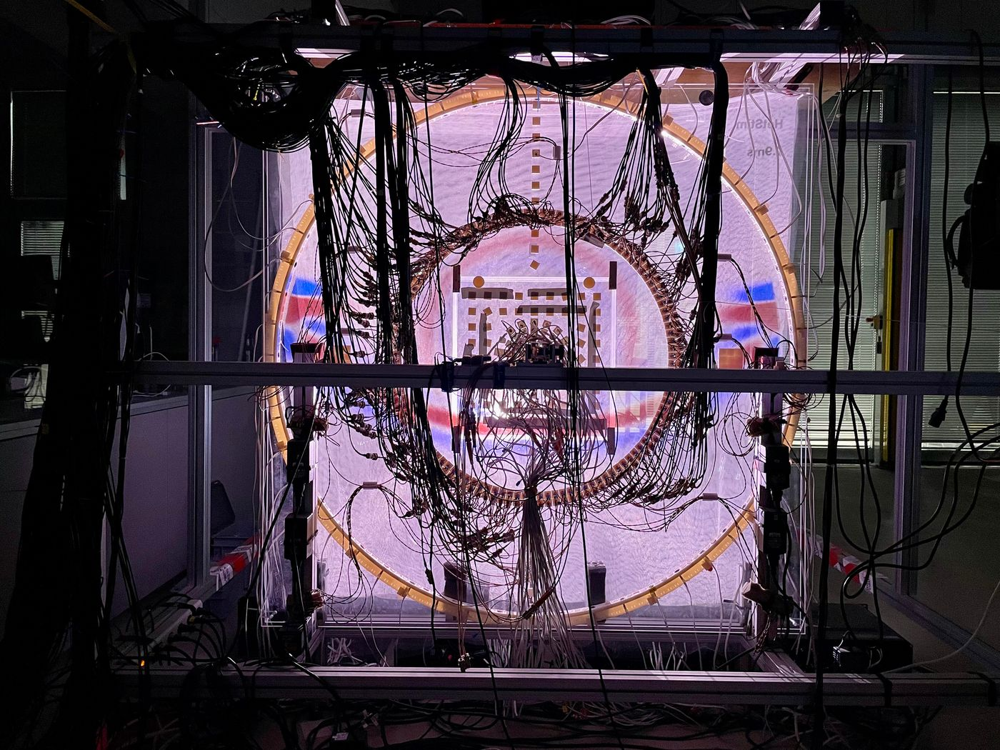
Film
A film on acoustic cloning is in preparation, in four cuts and for three scatterers: a circle, a square and a cross.
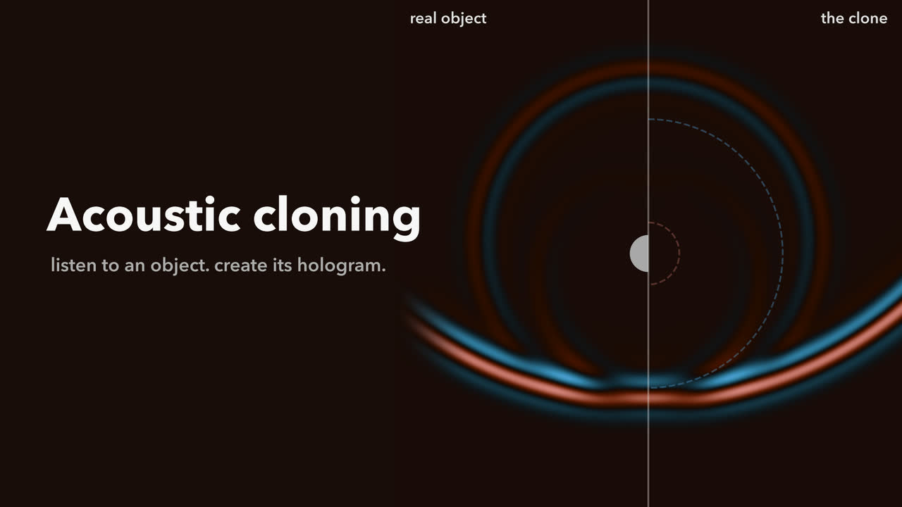
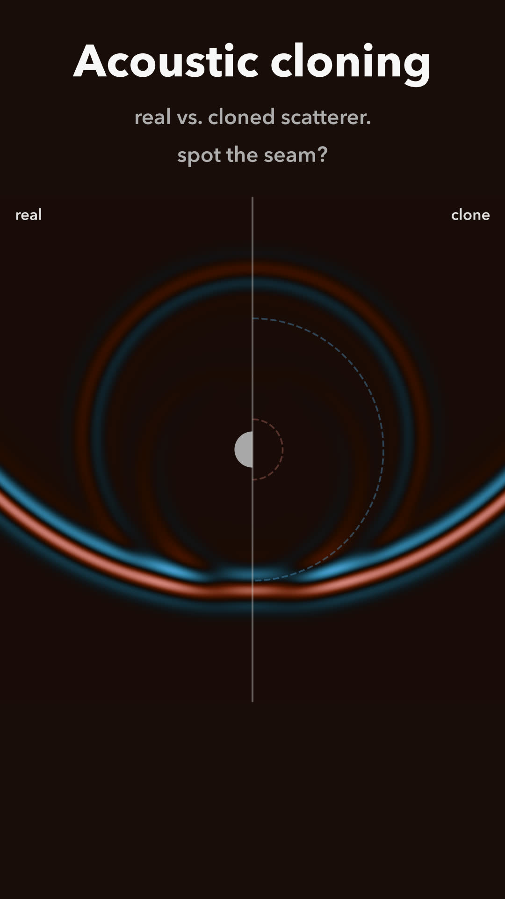
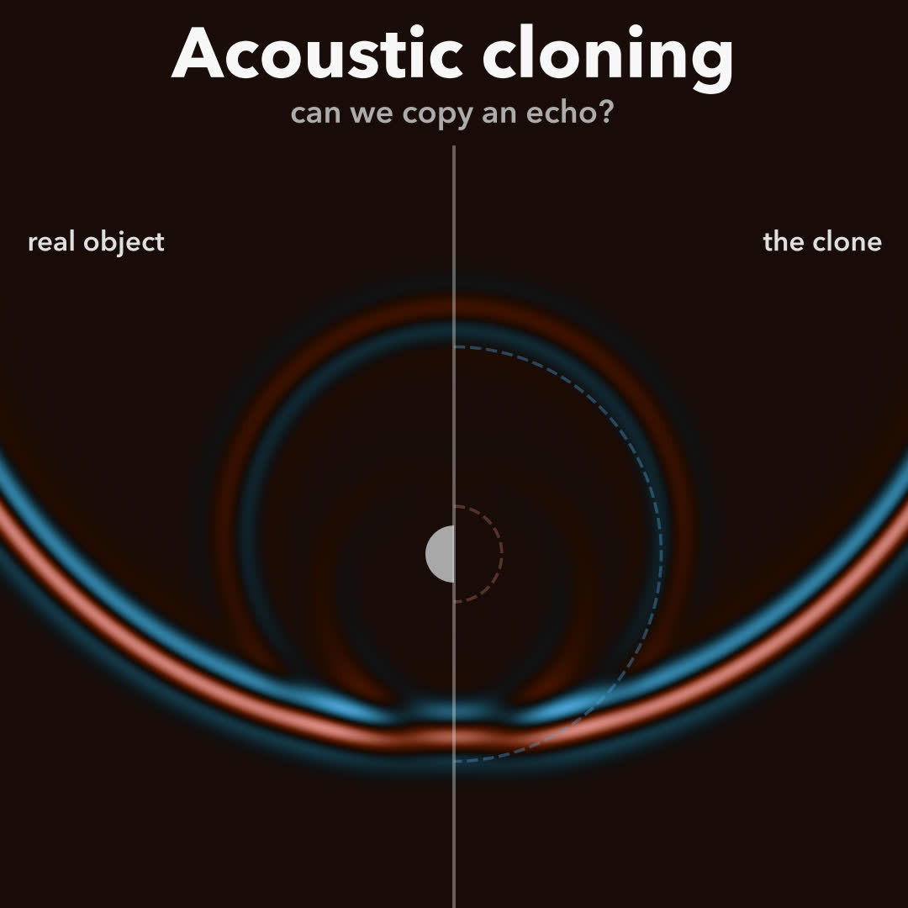
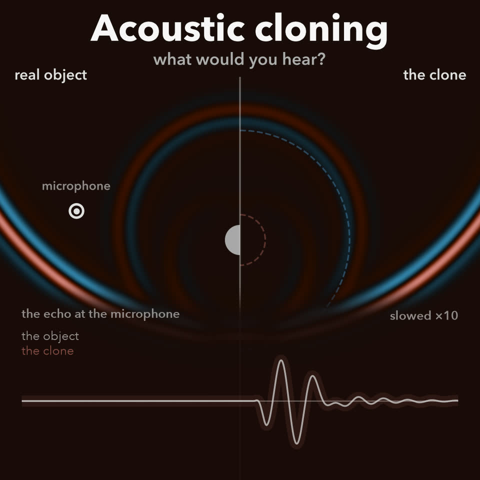
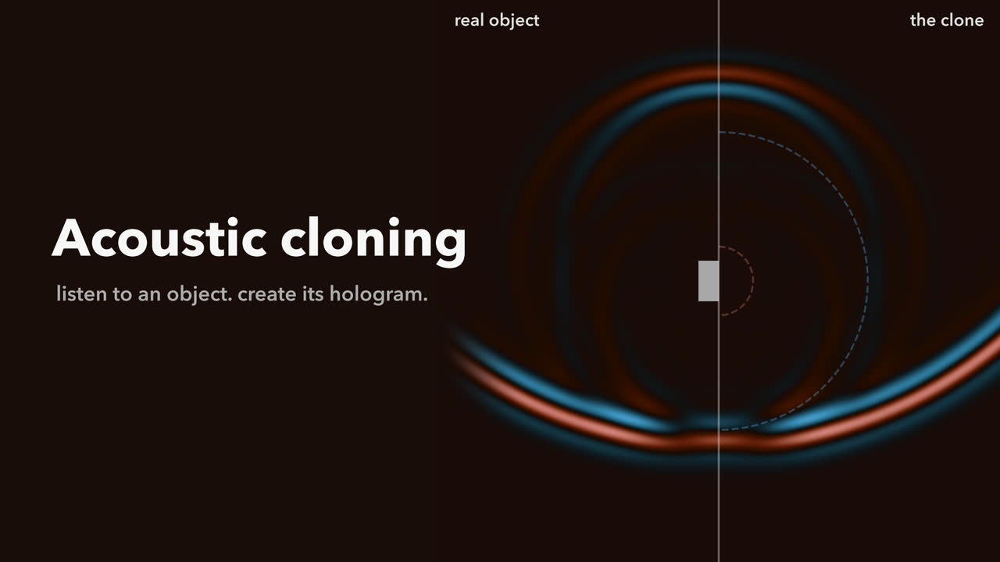
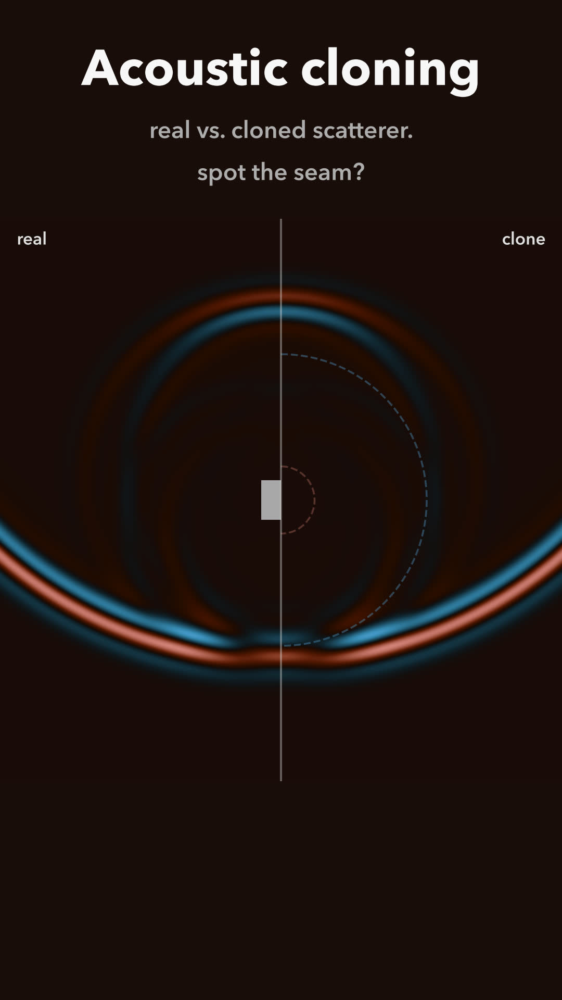
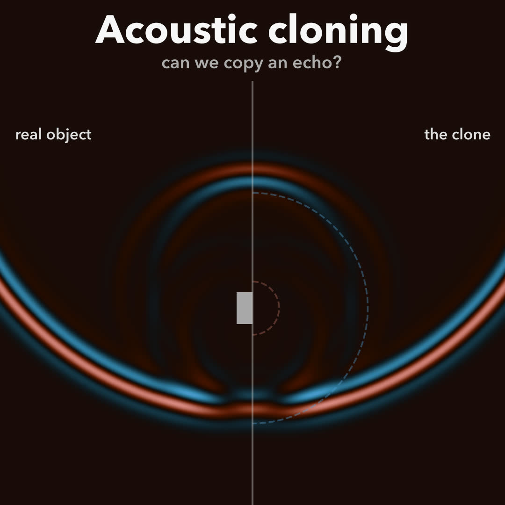
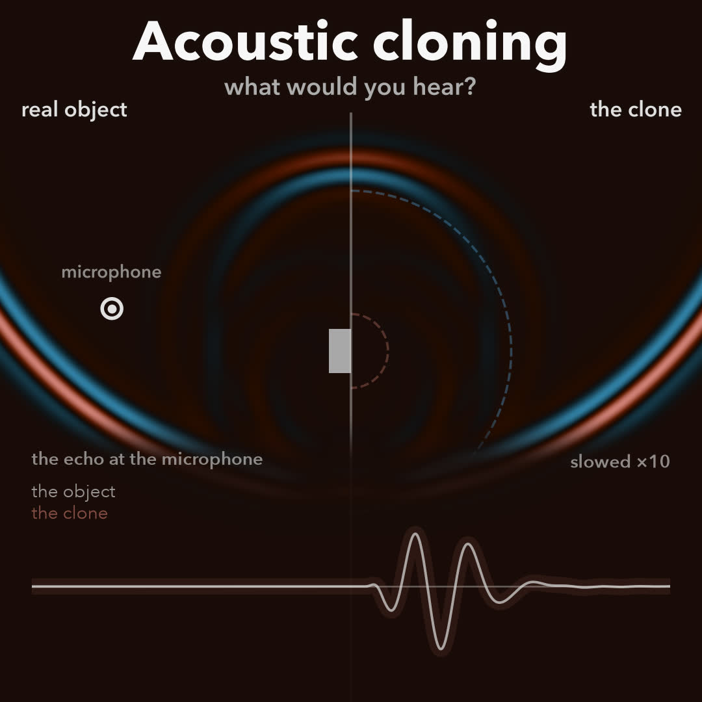
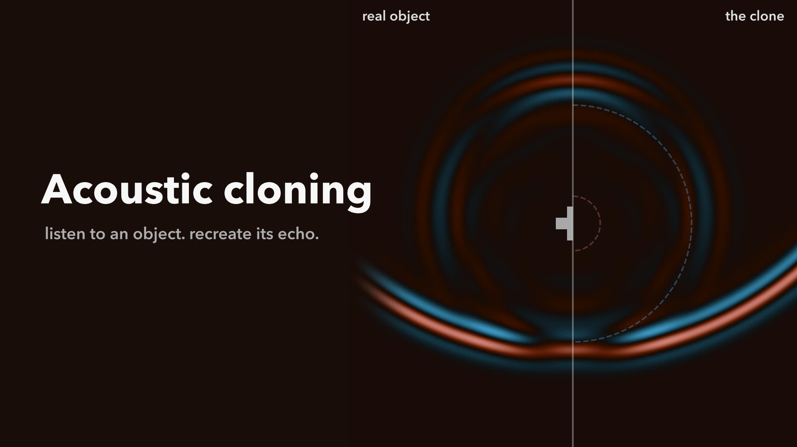
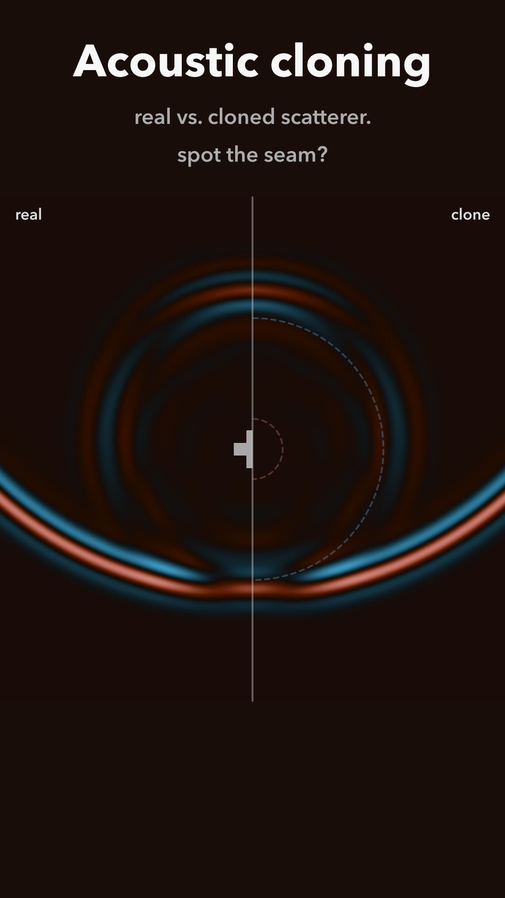
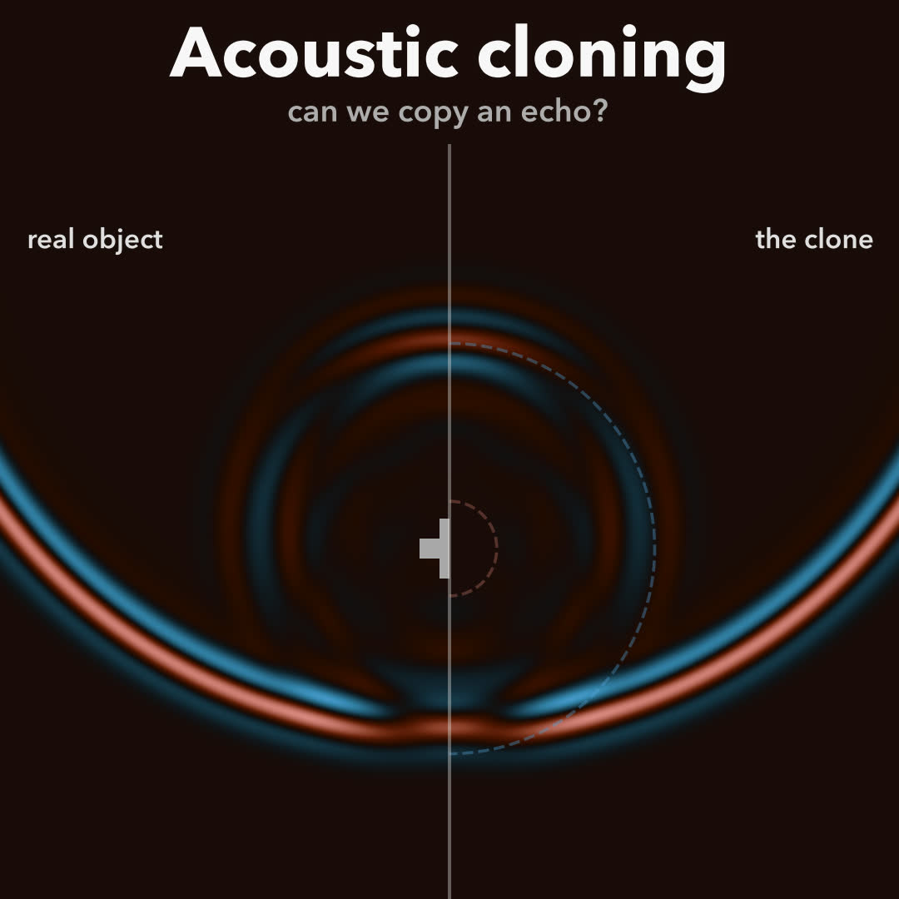
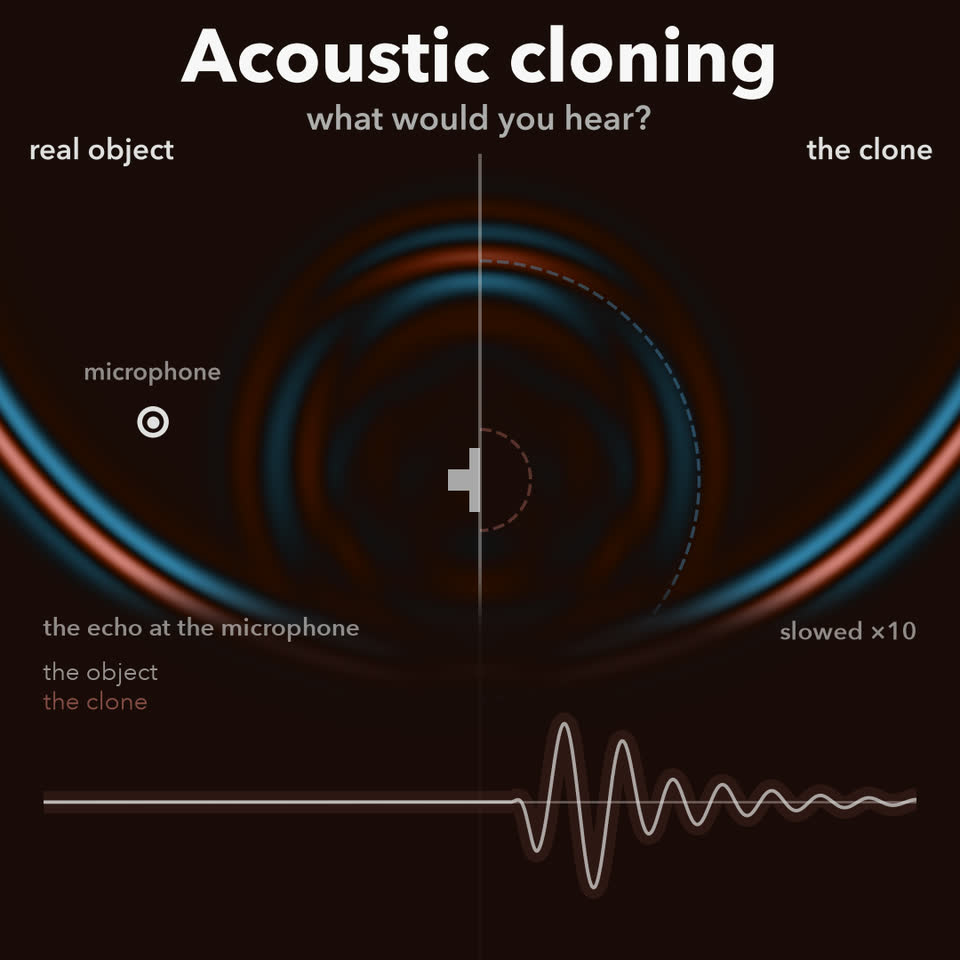
The code that generates the data of the films will be published on GitHub, as a starting point for reproducing the results of the paper numerically.
The experimental data behind the paper are available in the Zenodo repository (doi:10.5281/zenodo.16880576).
The paper was funded by the Swiss National Science Foundation (grant 197182).
How to cite
BibTeX for the paper and for its experimental data on Zenodo. Clicking a block selects it, ready to copy.
@article{Muller2023_acoustic_cloning,
author = {M{\"u}ller, Jonas and Becker, Theodor S. and Li, Xun and
Aichele, Johannes and Serra-Garcia, Marc and
Robertsson, Johan O. A. and van Manen, Dirk-Jan},
title = {Acoustic cloning},
journal = {Physical Review Applied},
volume = {20},
number = {6},
pages = {064014},
year = {2023},
doi = {10.1103/PhysRevApplied.20.064014}
}
@misc{Muller2025_acoustic_cloning_data,
author = {M{\"u}ller, Jonas},
title = {Acoustic Cloning},
year = {2025},
publisher = {Zenodo},
doi = {10.5281/zenodo.16880576},
url = {https://doi.org/10.5281/zenodo.16880576},
note = {Dataset}
}